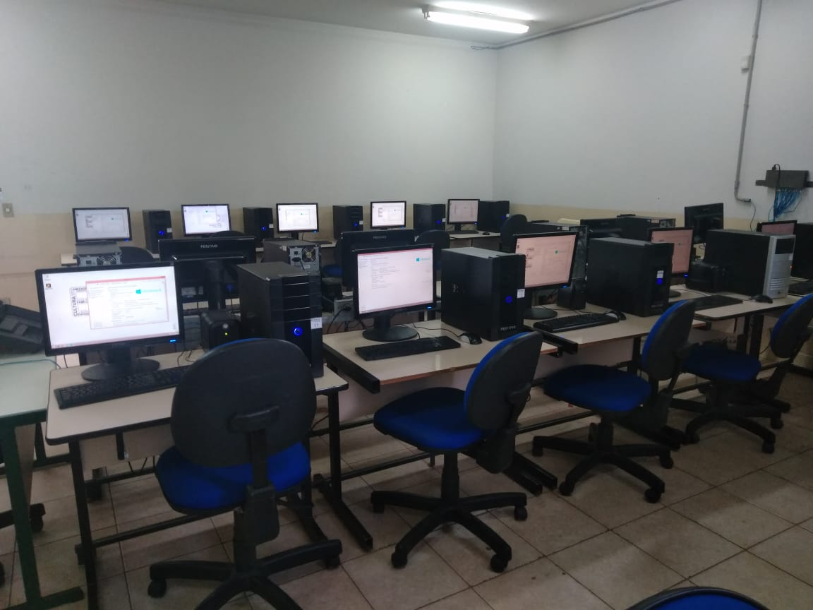

📕Descrição
É o profissional que analisa e projeta sistemas. Constrói, documenta, realiza testes e mantém sistemas de informação. Utiliza ambientes de desenvolvimento e linguagens de programação específica. Modela, implementa e mantém bancos de dados.
📖Eixo-Tecnológico
INFORMAÇÃO E COMUNICAÇÃO
📈Atuação
O técnico em Administração pode trabalhar em vários departamentos. No setor de compras, por exemplo, pode elaborar pedidos de compra de produtos, cadastrar fornecedores assim como conferir a entrega das mercadorias adquiridas. Na área de produção, pode fazer planilhas de controle de processos e produtos, registrando quais já foram produzidos e em qual quantidade. No departamento de vendas, também pode elaborar planilhas para acompanhar o desempenho das vendas, cadastrar clientes, preencher notas fiscais e gerar boletos bancários. No setor de Recursos Humanos, o técnico pode trabalhar calculando salários e benefícios dos funcionários e auxiliando nos processos de contratação e demissão de pessoal. Em qualquer área, pode atender clientes e fornecedores e redigir documentos, como e-mails, memorandos e atas.
💼Onde trabalhar
Empresas e departamentos de desenvolvimento de sistemas em organizações governamentais e não governamentais, podendo também atuar como profissional autônomo.
📆Duração do Curso
18 meses (3 semestre).
🕗Horário de aula
Seg - Sex / 19:00-23:00.
Laboratório de Informática
